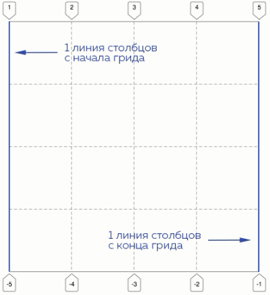

Знакомство с гридами
Координаты грид-элементов: grid-row-start и grid-column-start
Гриды - новая система для построения сетки страниц. Несмотя на новизку,
в современных браузерах у гридов хорошая поддержка. Возможно, из этих
курсов уже успели познакомиться с другими системами построения сеток, и
возникает вопрос - зачем нам гриды, если есть, например, флексбоксы?
Дело в том, что в отличие от флексбоков, гриды позволяют нам работать и
с колонками, и со строками одновременно, что замечательно, не правда ли?
Но не будем забегать вперёд и расскажем обо всё по порядку.
В первой части главы мы займёмся изучением гридов на примере
ландашафтного дизайна, попробуем построить грид-раскладку, представив,
что это карта местности, и составим визуальный план того, как будут
располагаться объекты на эой местности.
После того, как вы станете матёрыми ландшафтными дизайнерами, мы
перейдём ко второй части главы, где с помощью гридов попробуем создать
простые сетки реальных страниц, похожих на те, что встречаются в сети.
Наверняка вы уже делали что-то подобное с помощью флоатов, CSS-таблиц
или флексов.
Итак, чтобы сделать блок грид-контейнером, нужно задать ему
соответствующее значение свойства display:
.container {
display: grid;
}
Непосредственные дочерние элементы в грид-контейнере становятся его
грид-элементами и далее уже располагаются согласно раскладке грида.
Как мы уже упоминали, в гриде элементы располагаются по двумерной сетке.
То есть грид состоит из рядов и столбцов, располагающихся между линиями,
которые нумеруются по порядку.
А чтобы расположить элементы внутри грида, нужно задать ему координаты.
То есть как бы заставить элемент говорить:
Я - элемент грида, начинаюсь с такой-то линии столбцов и с такой-то
линии рядов.
Когда мы задаём координату начала грид-элементу по рядам или столбцам,
он автоматически продлевается до следующей линии рядов или столбцов и
таки образов образуется грид-ячейка.
На примере выше ячейка начинается на 4 линии столбцов и 3 линии рядов.
В коде делается это с помощью свойств grid-column-start и
grid-row-start.
Пример:
grid-column-start: 4 - элемент начинается с 4 линии столбцов.
grid-row-start: 3 - элемент начинается с 3 линии рядов
Перейдём к первому заданию. У нас есть грид, который состоит из 4 рядов и 4 столбцов. Давайте попробуем задать элементу в том гриде свойства, согласно которым он будет начинаться на определённой линии рядов и на определённой линии столбцов.
Координаты грид-элементов: grid-column-start и grid-column-end
Итак, теперь мы знаем, что будет, если указать начало грид-ячейки по
ряду и по столбцу - её размер автоматически станет равен одному
"делению" грида.
Если же мы захотим продлить грид-ячейку на несколько рядов или столбцов,
то нужно указать помимо той линии, где ячейка начинается, ещё ту линию,
где она заканчивается.

На примере выше ячейка начинается на 3 линии столбцов, а заканчивается на 5 линии.
Для обозначения конца ячейки по столбцам существует свойство grid-column-end.
То есть в коде мы так и запишем:
grid-column-start: 3 - элемент начинается с 3 линии столбцов.
grid-column-end: 5 - элемент заканчивается на 5 линии столбцов.
А теперь давайте попробуем создать ячейку, которая будет располагаться на двух столбцах
Координаты грид-элементов: grid-row-start и grid-row-end
Отлично! А что если мы захоти астянуть ячейку и по рядам тоже?
Для того чтобы мы имели такую возможность, существует свойство grid-row-end, которое работает в паре с grid-row-start и задаёт ячейке нужные нам координаты.

На примере выше ячейка начнаетсяс на 2 линии рядов, а заканчивается на 4 линии.
Код получится такой:
grid-row-start: 2 - элемент начинается со 2 линии рядов.
grid-row-end: 4 - элемент заканчивается на 4 линии рядов.
Теперь давайте попробуем разметить наш грид-элемент так, чтобы он располагался на двух рядах и двух столбцах одновременно.
Отрицательные значения grid-column-start и grid-column-end
Интересной особенностью грид-ячейки является возможность начинать отсчёт её координат как от начала (первой линии ряда или столбца), так и от конца грида (последней линии ряда или столбца). Вот как это выглядит схематично:
То есть, чтобы сказать ячейке: "Начинайся на первой линии столбцов от наала и заканчивайся на первой линии столбцов с конца", нужно написать такой код:
.element {
grid-column-start: 1;
grid-column-end: -1
}
А для того, чтобы сказать ячейке: "Начинайся на первой линии столбцов с конца грида и заканчивайся на первой линии с начала", нужно написать:
.element {
grid-column-start: -1;
grid-column-end: 1
}
Попробуем этот приём на практике.
Отрицательные значения grid-row-start и grid-row-end
В предыдущем задании мы уже упоминали, что отрицательные значения в координатах можно использовать и по рядам. И, как вы уже догадались, для этого нам понадобятся свойства grid-row-start / grid-row-end
Мы уже брали значения -1, давайте попробуем что-то новенькое, например, значение -2, что будет означать вторая линия рядов с конца грида:
В коде это будет записано так:
.element {
grid-row-start: 1;
grid-row-end: -2;
}
Наложение элемментов грида
Ура! Мы научились задавать координаты грид-элемента! Но навярняка у вас уже назрел вопрос: "Могут ли грид-элементы наслаиваться друг на друга?"
Ответ: "Да!" В случае пересечения координат двух элементов грида они просто располагаются один поверх другого в порядке следования в разметке, как будто это стопка листов.
Давайте поробуем сложить грид-элементы в "стопку".
Наложение элементов грида и свойство z-index
Как и на абсолютном спозиционированые элементы, на пересекающиеся грид-элементы действует старое-доброе свойство z-index.
Чем выше z-index, тем выше элемент в "стопке". Если у двух элементов одинаковый z-index, то выше будет располагаться тот, который идёт следующим по разметке.
Проверим этот момент на практике.
Именованные области грида:свойств grid-template-areas
Чтобы быстро описать простую сетку с помощью гридов, нужно хорошенько поорудовать свойствами grid-row-start/grid-row-end и grid-column-start/grid-column-end. Что мы и делали в предыдущих заданиях. Но получаетсяя несколько многословно, не правда ли?
Есть более быстрый способ создания сетки и заключается он в использовании свойств grid-template-areas и grid-area.
Помните игру "крестики-нолики", где мы вписываем в сетку 3 на 3 значки?
Так вот, со свойством grid-template-areas мы будем работать похожим образом, буквально по клеточкам визуально размечая наш грид.
Приведём пример. Допустим, что мы хотим сверстать вот такой простой грид 3 на 3, который представляет из себя три столбца:
В разметке мы имеем контейнер с тремя дочерними элементами:
<div class="grid">
<div class="grid-element-1"></div>
<div class="grid-element-2"></div>
<div class="grid-element-3"></div>
</div>
В CSS нам нужно описать области грида:
grid-template-areas:
"red yellow green"
"red yellow green"
"red yellow green";
Строки в значении свойства grid-template-areas - ни что иное, как визуальное представление рядов грида, а значенияя в строках - представления столбцов.
О! Так теперь таким образом можно строить какие угодно по форме сетки? Увы, но нет, есть небольшое ограничение - грид должен быть прямоугольной формы, а количество объявленных столбцов в каждой строке должно быть одинаковым.
Названия областей должны начинаться с буквы и могут включать цифры и дефис. Например, "lava lava2 lava-3" - валидное значение для grid-template-areas. Название в строках перечисляются через один или несколько пробелов.
Разметив то, как долны располагаться ячейки в гриде с помощью grid-template-areas, мы сделали половину дела. Теперь нужно связать визуальное представление с конкретными элементами в HTML. И поможет нам в этом свойство grid-area.
Так и запишем:
grid-element-1, ты будешь соответствовать области red, grid-element-2, ты будешь yellow, а ты, grid-element-3 - green
.grid-element-1 {
grid-area: red;
}
.grid-element-2 {
grid-area: yellow;
}
.grid-element-3 {
grid-area: green;
}
Обратите нимание, чо название grid-area для каждого элемента должно быть уникальным. Например, если есть 6 грид-элементов, значит должно быть и 6 названий grid-area:
grid-template-areas:
"green green red yellow"
"yellow2 red2 green2 yellow"
"yellow2 red2 green2 yellow";
А дальше для каждого элемента с первого по шестой прописывается своё название grid-area.
Одному элементу в HTML может соответствоват только одна грид-область. Если одна грид-область задана нескольким HTML-элементам, действовать будет только одно, наиболее специфичное объявление:
.grid-element-1 {
grid-area: red; /* Грид-область назначается первому элементу */
}
.grid-element-2 {
grid-area: red; /* Грид-область red переназначается второму элементу */
}
Итак, секрет, как быстро создавать несложные сетки на гридах, раскрыт. Попробуем на практике.
Свойство grid-template-areas и пустые области грида
Свойство grid-template-areas позволяет некоторые области почеать как пустые.
Для этого вместо буквенного именования области используется символ точки .
К примеру, возьмём код из прошлой теории, где был грид из трёх столбцов.
grid-template-areas:
"red yellow green"
"red yellow green"
"red yellow green";
Если мы хотим, чтобы в первом ряду осталось только последняя зелённая ячейка. то заменим red и yellow в первой строке на точки:
grid-template-areas:
". . green"
"red yellow green"
"red yellow green";
Получается нужный нам результат:
Давайте дополним пустыми областями пример из прошлого задания.
Автоматические кординаты элемнтов в гриде: столбцы
Окей, мы научились экономить время и использовать именованные области! Круто!
Но давайте теперь ввернёмся в самое начало, к первым заданиях этой главы. В них мы имели дело с гридами фиксированной ширины 4 на 4 ячейки. Сейчас мы рассмотрим свойства grid-template-columns и grid-template-rows.
Свойство grid-template-columns пеечисляет количество и ширину будущих столбцов грида. К примеру, запиь grid-template-columns: 100px 100px 100px; говорит гриду:
Ты будешь иметь три столбца, каждый шириной 100px
А что же в это время происходит с рядами?
Если не задавать параметры для рядов, то их количество становится переменным. Порядок действий такой:
- Все грид-элементы выытраиваются в один ряд согласно объявленной раскладке столбцов.
- Если грид-элементов больше, чем столбцов, то не вписавшиеся в один ряд элементы переносятся на следующий ряд и заполняют его.
- Новые ряды формируются до тех пор, пока все гриды-элементы не будут вписаны в раскладку по столбцам. Если последний ряд заполняется элементами не полностью, то оставшееся место в гриде остаётся пустым
Рассмотрим пример. Возьмём грид с пятью элементами, которому задан один столбец. По раскладке получается, что первый ряд грида может поместиться всего один грид-элемент. Остальные элементы будут переноситься на новый ряд, и таким образом сформируются пять рядов, то есть выстроятся в столбец:
Если же мы увеличим количество столбцов до двух, то в один ряд будут помещаться уже по два элемента. То есть всего элементы сформируют три ряда, в первом и втором ряду будет по два элемента, а в третьем - один:
Что касается высоты рдов, то она распределится равномерно, чтобы ряды заполнили всё пространство грида.
Ну, а чтобы всё стало совсем понятно, перейдём к практике.
Автоматические координаты элементов в гриде: столбцы и ряды
Аналогично grid-template-columns работает и свойство grid-template-rows, только оно сообщает гриду сколько рядов он будет содержать и какой они будут высоты. К примеру, запись grid-template-rows: 100px 200px 100px; говорит гриду:
Ты будешь иметь три ряда, первый высотой 100px, второй высотой 200px и третий - 100px.
Если при этом столбцам не заданы явные параметры, то по умолчанию, будет существовать всего один столбец, элементы в котором растянутся на всю его ширину.
В случае, если в гриде есть ряды, которым не задана явная высота в grid-template-rows, оставшееся свободное пространство по высоте распределится среди них равномерно.
Таким образом, зная об особенностях распределениях ячеек в гридах и используя свойство grid-template-columns и grid-template-rows, можно создавать нужные вам сетки.
Комбинируем автоматические и явные координаты
Итак, мы выяснили, как свойства grid-template-columns и grid-template-rows влияют на количество и размеры столбцов и рядов грида, а свойства grid-column-start / grid-column-end и grid-row-start / grid-row-end помогают нам распределять грид-элементы по конкретным координатам в грид-раскладке.
Теперь самое время разобраться, как использовать эти свойства совместно.
Давайте создадим грид с нуля и определим для него столбцы и ряды, а затем будем управлять отдельными элементами.
Начнём с создания грид-контейнера. Заметьте, что по умолчанию, при его создании, грид будет иметь всего один столбец во всю ширину контейнера, а каждый его элемент будет занимать целый ряд.
Комбинируем автоматические и явные координаты, часть 2
Как мы заметили, у нас появились пустые незаполненные элементы области, которые мы можем использовать. Поэтому следующим нашим шгом после определения рядов и столбцов будет распределение элементов. Зачем пропадать драгоценному пространству?
Идея в том, чтобы правильо распределить это пространство среди уже имеющихся элементов.
Как это сделать? Задавать всем элементам начало и конец? Не обязательно. Часть из элементов может иметь чёткие координаты в гриде, а часть занимать оставшееся место, то есть распределяться браузером автоматически.
Работает это следующим образом:
- Сначала выстраиваются элементы с явными координатами.
- Затем выстраиваются элементы, которым координаты явно не заданы. Они выстраиваются по очереди в порядке следования в размметке в оставшиеся "свободные ячейки" от начала грида к концу. По размерам такие грид-элементы занимают одну ячейку
Нефиксировання ширина столбцов
Выполненяя прошлые задания, мы убедились, что если не задавать строкам и столбцам грида явные размеры, то они по умолчанию будут занимать всё свободное прстранство. Давайте разберёмся, как мы можем извлечь из этого пользу.
Рассмотрим пример, когда нам нужно задать явную ширину первому и последнему столбцу трёхколоночного грида, а среднему столбцу отдать всё оставшееся пространство по ширине, не фиксируя его размеры.
Сейчас мы умеем задавать размеры столбцов с помощью фиксированных значений, например, вот так:
grid-template-columns: 100px 100px 100px;
Но если мы хотим оставить среднему столбцу автоматический размер, то в объявлении должно появиться ключевое слово auto. То есть код станет таким:
grid-template-columns: 100px auto 100px
Нефиксированная ширина столбцов и рядов
Значение auto можно использовать и в определении столбцов, и в определении строк. Можно даже делать это одновременно.
К примеру, давайте создадим такой грид: вся шиина грида распределяется на два столбца поровну автоматически, первый и последний ряды имеют фиксированные значения
Грид-интервал: свойство gap
В реальных проектах часто бывает так, что при создании сетки между столбцами и рядами требуется оставить небольшой промежуток.
Разработчики спецификации гридов предусмотрели и эту возможность, придумав для нас свойство gap, позволяющее добавлять равномерный интервал сразу и между рядами, и между столбцами. Определяется это свойство в px, % и других единицах измерения:
.grid {
gap: 10px;
}
Выглядят интервалы следующим образом:
Интересная ообенность грид-интервалов: они не появляются меду краями контейнера и крайними элементами. То есть это пустые пространства между элементами только изнутри грида.
Грид-интервал: свойства row-gap и column-gap
Не всегда нам необходимы одинаковые интервалы между рядами и столбцами, и в этом случае к нам на помощью приходят свойства column-gap и row-gap.
Как вы уже догадались, первое свойство задаёт интервал между столбцами, а второе - между рядами.
.grid {
row-gap: 20px /* грид-интервал между рядами */
column-gap: 50px /* грид-интервал между столбцами */
}
На самом деле с помощью свойства gap тоже можно задавать интервал отдельно для столбцов и для рядов. Если задать gap не одно, а два значения, первое будет определять интервал между рядами, а второе - между столбцами. Второе значение задаётся через пробел после первого:
.grid {
/*
грид-интервал между рядами 20px,
грид-интервал между столбцами 50px
*/
gap: 20px 50px;
}
Раскладка простой страницы: создаём грид
Хорошо, на парках и зонах отдыхах мы натренировались достаточно. Теперь пора вернуться к интерфейсам, ведь мы же для этого тут собрались?
В следующей серии заданий мы разберём, как, используя гриды, сделать сетку двух страниц типового интернет-магазина: главной страницы и каталога с товарами.
Итак, начнём с главной страницы. У нас есть контейнер .index-rgid и набор блоков в нём: шапка с навигационным меню, промоблок с картинкой, блок со статьями, список отзывов и подвал.
Сейчас они стилизованы, но не расположены по сетке, а просто идут друг за другом сверху вниз. Нашей задачей будет исправить это и построить вот такую сетку:
В приведённой схеме раскладке красные области показывают, как будут идти столбцы грида. Боковая клонка будет шириной в один столбец, а основное содержимое страницы будет занимать два столбца. Для единобразия все три столбца будут одинаковой ширины.
Начнём писатькод: сделаем раскладку нашей страницы гридом, добавим интервалы между рядами и столбцами, а потом зададим гриду три столбца.
Раскладка простой страницы: шапка
Мы справились, но наша страница всё ещё не выглядит так, будто мы зашли на настоящий сайт. Сейчас она представляет собой три столбца, по которым распределились все наши блоки, автоматически подстроив высоту рядов под контент.
Поэтому не будет останавливаться на достигнутом и растянем шапку на всю ширину грида, чтобы остальные на достигнутом и растянем шапку на всю ширину грида, чтобы остальные элементы перешли ниже, в следующие ряды.
Раскладка простой страницы: промоблок
Заметьте, что мы не стали фиксировать высоту ряда, в котором находится шапка сайте. Шапка содержит меню, количество пунктов которого может увеличиваться, что изменит высоту блока.
Следующему ряду давайте добавим фиксированную высоту. Ряд включает промоблок с картинкой, в сетке этот грид-элемент будет занимать два столбца. Не пугайтесь фиксированной высоты ряда. Мы можем позволить себе такую дерзость, так как сейчас этот ряд содержит только блок с картинкой, и в нём нет текста, соответственно высота этого блока может оставаться неизменной. И всё будет хорошо.
Раскладка простой страницы: боковая колонка
В этом задании займёмся боковым столбцов, в который нам нужно поместить блок с отзывами.
В разметке блок .sidebar находится почти в самом концу, перед подвалом, но с помощью гридов мы можем запросто переместить его в любое место на страницу, ничего при этом не меняя в разметке. Ещё одна прекрасная особенность гридов!
Поместим его справа от промоблока, он будет занимать весь третий столбец и два ряда: второй и следующий за ним.
Примечательно, что блок начинается на фиксированном по высоте втором ряду и продолжается на третьем ряду, у которого высота автоматическая. Почему так, ведь в нашем блоке есть текст?
Дело в том, что всё-таки допустимо делать фиксированную высоту ряда, даже если в нём есть блоки с тектовым содержанием. Но нужно обязательно убедиться, что такие блоки расположены, помимо грид-ячеек с фиксированной высотой, ещё и в грид-ячейках с автоматической высотой, чтобы оставалась возможность увеличения размера текстов.
Раскладка простой страницы: блок
Пришла очередь третьего ряда. На нём у нас будет располагаться блок со статьями, а также часть блока с отзывами.
Как вы уже догадались, блок со статьями, как и промоблок, занимает два столбца.
Но в отличие от промоблока, здесь нам нельщя фиксировать размеры элементов, так как по высоте у нас оба блока, что статьи, что отзывы, не должны быть ограничены. Почему? Правильно, потому что они оба содержат текстово содержимое, которое может меняться.
Обратите внимание, что у грид-строки с автоматическим размером высота формируется по высоте самого высокого грид-элемента, а остальные грид-элементы, которые тоже располагаются на этой грид-строке - растягиваются на её высоту.
Давайте проконтролируем, как будет ратягиваться третий нефиксированный ряд нашего грида, если в разметке появится ещё одна статься блока.
Заметьте, что grid-template-rows мы ничего не дописываем, так как по умолчанию размеры оставшихся рядов задаются автоматически, а нас это пока устраивает.
Раскладка простой страницы: завершение
Остался финальный рывок - зафиксировать размеры четвёртого ряда, на котором будет располагаться подвал.
Аналогично шапке, подвал растягиваетс на все три столбца, то есть на всю ширину грида.
На этом раскладка нашей страницы готова!
Раскладка каталога интернет-магазина: создаём внутренний грид
Мы отлично справились с предыдущими задания, но не время расслабляться.
Вторым интерфейсом, который мы сверстаем с помощью гридов, будет каталог интернет-магазина. И как в любом каталоге здесь тоже есть: шапка, фильтр, сортировка, ассортимент товаров и подвал.
Ну, а чтобы вы не заскучали и чтобы открыть вам приём, который удобен в реальных проектах - мы возьмём часть с шапкой и подвала из прошлой страницы и сделаем из неёё каркас. Общему контейнеру дадим класс inner-grid, что обозначает "внутреннюю" страницу. Внутрь поместим отличающийся контент, который будет самостоятльным и независимым блоком, что даёт нам возможность делать исправления, ничего не ломая, или легко заменить его на что-то другое.
Вот как будет выглядеть итогавая сетка:
Обратите внимание на исходный код задания: блок .inner-grid содержит три ряда - подвал имеет фиксированный размер, у ряда с шапкой автоматическая высота, как и в прошлом задании, а под контент отводится оставшееся место:
.inner-grrid {
display: grid;
grid-template-rows: auto auto 100px;
}
В качестве контентной части выступает блок .catalog-grid, который тоже в свою очередь мы сделаем гридом. Один грид будет включён во второй. Магия!
Начнём, как и в прошлый раз, с создания грида, задания грид-интервалов и объявления трёхколоночной сетки.
Раскладка каталога интернет-магазина: блок сортировки
Теперь во внутреннем гиде объявим первый ряд, который будет иметь фиксированные размеры. В нём буду располагаться сортировка, занимающая вторую и третью колонку, а также часть фильтра, который также продолжится на следующих рядах.
Раскладка каталога интернет-магазина: блок с фильтрами
Выглядит наша страничка пока что не очень. А всё потому, что первый ряд ограничен по высоте и это ограничение дествует не только не только на блок с сортировкой, как задумывалось, но и на фильтр, который не должен быть жёстко фиксирован по высоте, так как количество элементов в нём в дальнейшем может меняться.
Поэтому в качестве рещения сделаем фильтр "немного переменной высоты", привязав её к рядам грида. Сейчас фильтр примерно равен по высоте блоку сортировка + три ряда товаров. То есть, можно сказать, что филтр будет начинаться с первой линии ряда и заканчиваться на пятой линии.
Текущее решение, конечно, не идеально, и высота элемента всё-таки привязана к контенту, но менее жёстко, чем фиксированная, поэтому нбольшие изменения контента он вполне себе выдержит.
Раскладка каталога интернет-магазина: завершение
Итак, что мы имеем. Мы прописали минимум свойств для достижения вполне себе приличного результата: размеры столбцов, размер первого ряда и координаты блоков сортировки и фильтра в гриде. Остальные элементы расположились автоматически без использования дополнительного кода.
Если добавлять дополнительные товары в разметку, то согласно раскладке грида они начнут "заползать" под фильтр и далее занимать все доступные столбцы (очень похоже на поведение float-ов, не правда ли?)
Надеемся, вы уже догадались за что можно любить гриды? А ведь мы только начинаем своё знакомство с ними.